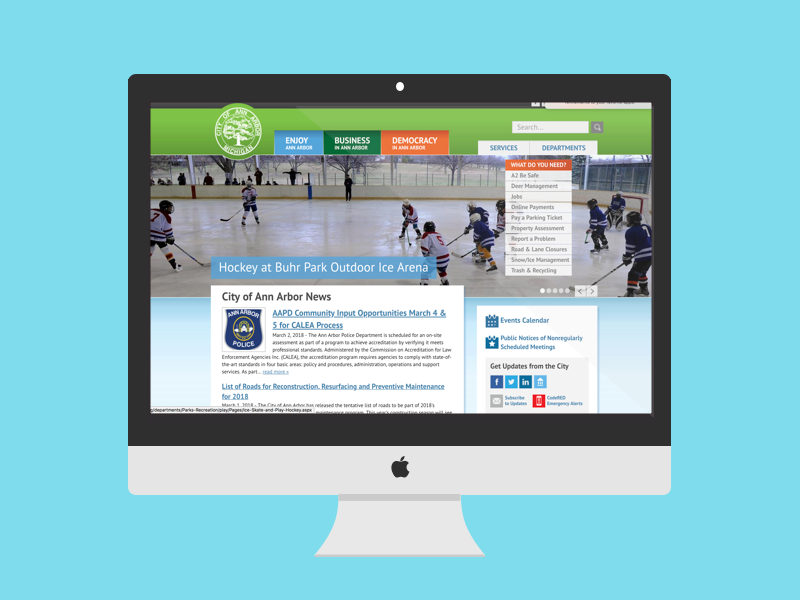

City of Ann Arbor
Summary
- Scoped the problem given by the client
- Observed the office flow and current system of the client
- Performed background research to dig deeper into the problem
- Interviewed Stakeholders to know more about their views
- Built affinity wall to come up with key findings
- Provided 1 primary along with 3 secondary impactful solutions to the client
Email ckgandhi@umich.edu to request for the detailed report
Problem
Currently, water is manually shut off in between tenant move in and move out and processing multiple requests to turn the water on/off is overwhelming for the City of Ann Arbor staff especially during the peak season.
Team
4
Timeline

Background Research
In order to get idea about City of Ann Arbor we looked into their website and spoke to many people who use their services. Also to get more isnight about the problem we performed a background research by focussing on the following topics:
- Overview of City of Ann Arbor
- Water transition process in other college towns
- Water transition process in other towns of Michigan
Interview
To gain a better understanding of the current water transition system interviews were conducted with the parties that work closely with this issue and some of the stakeholders affected. Within the City of Ann Arbor Water Department, we spoke with two customer service employees, the treasurer, the two on-field crew members, and the system analyst. We also talked with two property owner and two tenants to gain their perspective on the current system. The interviews ranged from 30 – 90 minutes with key staff at the City of Ann Arbor, to 15 – 20 minutes with tenants and property owners.
I was responsible for interviewing the Customer Service Employees, Tenants and, Property Owners.
Below is the interview protocol that I used while interviewing the Customer Service Employees:
- Role in Water Transtion Process
- Overarching Question: How does customer service support Ann Arbor residents with water transition?
- Can you list down the different ways through which the customers get in contact with you?
- What are the different types of questions or concerns you receive from customers?
- Please describe in more detail a question or concern you received today or yesterday related to water services?
- Via call or email?
- Why do you think these are common questions from customers?
- What are other ways that customers can access information about these problems other than contacting customer service?
- How do customers learn about charges and fees associated with the water transition process?
- How were these charges determined?
Management of work - How were you trained for this position?
- Is there a protocol (training manual) that you follow?
- How was the protocol decided?
- How do you keep track (manage) the work you have?
- How do you deal with the increasing requests that you get in the peak period?
- What are some other ways (other than calling) that one can request for connection change?
- Can you compare these different ways requests are made?
- Describe an instance where you met a problem that you did not know how to resolve?
- Do you collect/save any data from the customer service calls?
- What does the data look like?
- How is it saved? (Data structure if she knows)
- Please tell me about the last instance when you received a call from a defaulter?
- How do you track defaulters - people who do not pay the bill?
- Is it digital / folders?
- How do you check for records > UI walkthrough
- How do you give them a notice of the charges?
- Can you tell us about a billing case where there was a conflict between owner and tenant?
- What recommendations do you have to improve these areas?
Handling of requests and data
Affinity wall
After gaining all the information through the background research and interviews, we build a affinity wall to cme up with some major findings mainly leading to the problem.

Consulting Report
After going through the entire process we came up with final recommendations for our client that could solve the problem in th best possible way.We wrote a consulting report stating all the findings that we came across and the recommendations along with rationale.
- A detailed report could be provided if requested.